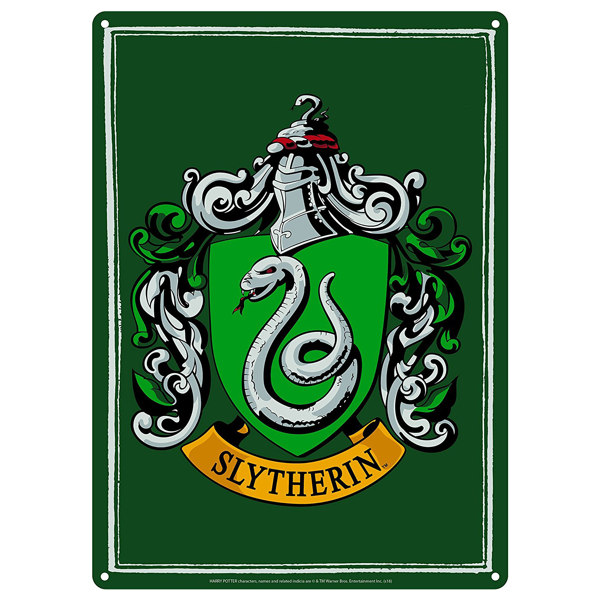

Slytherin is one of the four Houses at Hogwarts School of Witchcraft and Wizardry, founded by Salazar Slytherin. In establishing the house, Salazar instructed the Sorting Hat to pick students who had a few particular characteristics he most valued. Those characteristics include: cunning, resourcefulness, and ambition. Many Slytherin students tend to clique together, often acquiring leaders, which further exemplifies Slytherin's ambitious qualities. Examples of these include Draco Malfoy’s Gang and the Death Eaters. The founder highly valued and favoured pure-blood students and the Sorting Hat admitted that it can be a factor when being Sorted. Students of any blood status can now be placed in the house. However, a Muggle-Born student from that house is considered to be quite rare.
The emblematic animal of the house is a snake and its colours are green and silver. There were two notable heads of the house; Horace Slughorn took the role twice (first leaving in 1981 and then taking the role again from 1997 until leaving before 2016), and Severus Snape. The patron ghost of the house is the Bloody Baron. Slytherin corresponds roughly with the element of water due to serpents being commonly associated with the sea and lochs in western European mythology, as well as serpents being physically fluid and flexible animals. Similarly, in Celtic mythology, water is seen as a portal to another world, leading some to speculate that the element was chosen to symbolise many Slytherins' hope for a pure-blood only community. The colours also correspond with waters around lakes and lochs often being green, and silver being often associated with grey rain water.